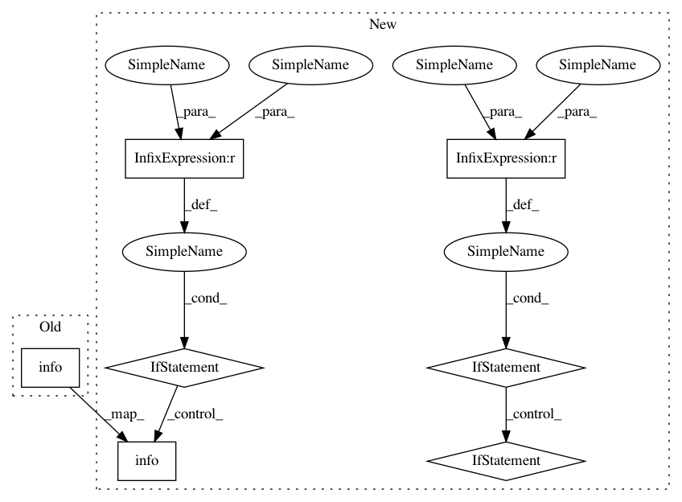

04b10c6b55f64ec4a01e8a09fcb2f44760486e8c,ludwig/experiment.py,,experiment,#Any#Any#Any#Any#Any#Any#Any#Any#Any#Any#Any#Any#Any#Any#Any#Any#Any#Any#Any#Any#Any#Any#Any#Any#,50
Before Change
)
if is_on_master():
logging.info("Training set: {0}".format(training_set.size))
logging.info("Validation set: {0}".format(validation_set.size))
logging.info("Test set: {0}".format(test_set.size))
// update model definition with metadata properties
update_model_definition_with_metadata(model_definition, train_set_metadata)
After Change
)
if is_on_master():
logging.info("Training set: {0}".format(training_set.size))
if validation_set is not None:
logging.info("Validation set: {0}".format(validation_set.size))
if test_set is not None:
logging.info("Test set: {0}".format(test_set.size))
// update model definition with metadata properties
update_model_definition_with_metadata(model_definition, train_set_metadata)
// run the experiment
model, training_results = train(
training_set=training_set,
validation_set=validation_set,
test_set=test_set,
model_definition=model_definition,
save_path=model_dir,
model_load_path=model_load_path,
resume=model_resume_path is not None,
skip_save_progress_weights=skip_save_progress_weights,
gpus=gpus,
gpu_fraction=gpu_fraction,
use_horovod=use_horovod,
random_seed=random_seed,
debug=debug
)
(
train_trainset_stats,
train_valisest_stats,
train_testset_stats
) = training_results
if is_on_master():
// save train set metadata
save_json(
os.path.join(
model_dir,
TRAIN_SET_METADATA_FILE_NAME
),
train_set_metadata
)
// grab the results of the model with highest validation test performance
validation_field = model_definition["training"]["validation_field"]
validation_measure = model_definition["training"]["validation_measure"]
validation_field_result = train_valisest_stats[validation_field]
best_function = get_best_function(validation_measure)
// print the results of the model with highest validation test performance
if is_on_master():
if validation_set is not None:
// max or min depending on the measure
epoch_best_vali_measure, best_vali_measure = best_function(
enumerate(validation_field_result[validation_measure]),
key=lambda pair: pair[1]
)
logging.info("Best validation model epoch: {0}".format(
epoch_best_vali_measure + 1)
)
logging.info(
"Best validation model {0} on validation set {1}: {2}".format(
validation_measure,
validation_field,
best_vali_measure)
)
if test_set is not None:
best_vali_measure_epoch_test_measure = train_testset_stats[
validation_field
][validation_measure][epoch_best_vali_measure]
logging.info(
"Best validation model {0} on test set {1}: {2}".format(
validation_measure,
validation_field,
best_vali_measure_epoch_test_measure
)
)
// save training statistics
if is_on_master():
save_json(
training_stats_fn,
{
In pattern: SUPERPATTERN
Frequency: 3
Non-data size: 7
Instances
Project Name: uber/ludwig
Commit Name: 04b10c6b55f64ec4a01e8a09fcb2f44760486e8c
Time: 2019-02-19
Author: 33033675+ydudin3@users.noreply.github.com
File Name: ludwig/experiment.py
Class Name:
Method Name: experiment
Project Name: uber/ludwig
Commit Name: 04b10c6b55f64ec4a01e8a09fcb2f44760486e8c
Time: 2019-02-19
Author: 33033675+ydudin3@users.noreply.github.com
File Name: ludwig/experiment.py
Class Name:
Method Name: experiment
Project Name: uber/ludwig
Commit Name: 599551287e17586e1a301b2e066414bfe251559a
Time: 2019-02-20
Author: piero@uber.com
File Name: ludwig/api.py
Class Name: LudwigModel
Method Name: train
Project Name: tryolabs/luminoth
Commit Name: 133f23ffbdd324525bce5fd2fbc86e3988a2f59d
Time: 2017-10-09
Author: javirey@gmail.com
File Name: luminoth/tools/dataset/dataset.py
Class Name: RecordSaver
Method Name: save